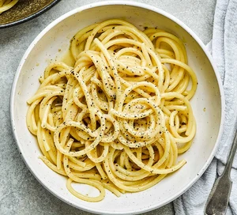

Cacio e pepe

Whip up a simple cacio e pepe for a speedy lunch
With four simple ingredients – spaghetti, pepper, parmesan
and butter – this is a storecupboard favourite
Ingredients
- 200g bucatini or spaghetti
- 25g butter
- 2 tsp whole black peppercorns, ground,
or 1 tsp freshly ground black pepper
- 50g pecorino or parmesan, finely grated
Steps to Follow
- Cook the pasta for 2 mins less than pack
instructions state, in salted boiling water.
- Melt the butter in a medium frying pan over a low heat,.
- Then add the ground black pepper and toast for a few minutes.
- Drain the pasta, keeping 200ml of the pasta water.
- Tip the pasta and 100ml of the pasta water into the pan
with the butter and pepper.
- Add a splash more pasta water if you need to, to loosen
the sauce and coat the pasta.
- Serve immediately with a good grating of black pepper.